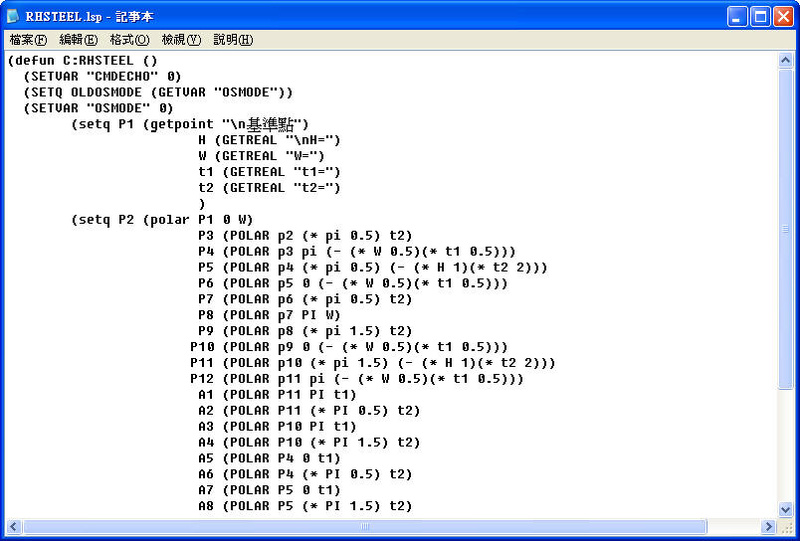
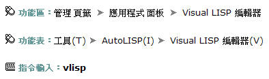
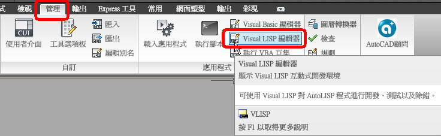
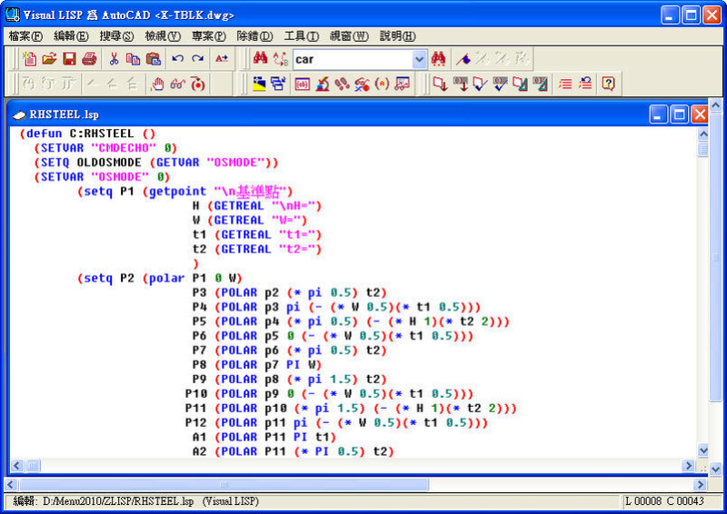

以前剛開始學 AutoLISP 時候，記得都是使用 Windows 記事本 來編輯攥寫，但是非常的辛苦，因為 括弧及雙引線 等語法都要成雙成對，而且還有一些函數、運算子、字串、整數及實數常常傻傻分不清楚，正因為 記事本 的環境為白底黑字，所以除非很清楚程式語法構架，但是老手也會常常找不到哪裡缺一個括弧。
使用 記事本 開啟 LISP檔案:

在這裡跟各位分享另一個 編輯攥寫 AutoLISP 的環境 [Visual LISP]，使用這個軟體工具可以快速隨寫隨測，我覺得最棒的地方是預設內定使用文字顏色來區分所有的 函數、運算子、字串、整數及實數等等，所以對於初學LISP的朋友算是一大福音，再也不會被搞混囉，而且還可以幫你整理編排程式碼以及立即載入作用中的視窗。
VLISP指令:

「VLISP指令」顯示 Visual LISP 互動式開發環境。

使用 Visual LISP 開啟 LISP檔案:

以下程式碼是我上第一堂課學會使用 polar函數，polar函數可以求某點的指定角度和指定距離處的點，所以我試著使用它來畫出H型鋼的斷面尺寸，有興趣的朋友可以試看看，但是寫的不是很工整也請多多包含啦!!
代碼:
(defun C:RHSTEEL ()
(SETVAR "CMDECHO" 0)
(SETQ OLDOSMODE (GETVAR "OSMODE"))
(SETVAR "OSMODE" 0)
(setq P1 (getpoint "\n基準點")
H (GETREAL "\nH=")
W (GETREAL "W=")
t1 (GETREAL "t1=")
t2 (GETREAL "t2=")
)
(setq P2 (polar P1 0 W)
P3 (POLAR p2 (* pi 0.5) t2)
P4 (POLAR p3 pi (- (* W 0.5)(* t1 0.5)))
P5 (POLAR p4 (* pi 0.5) (- (* H 1)(* t2 2)))
P6 (POLAR p5 0 (- (* W 0.5)(* t1 0.5)))
P7 (POLAR p6 (* pi 0.5) t2)
P8 (POLAR p7 PI W)
P9 (POLAR p8 (* pi 1.5) t2)
P10 (POLAR p9 0 (- (* W 0.5)(* t1 0.5)))
P11 (POLAR p10 (* pi 1.5) (- (* H 1)(* t2 2)))
P12 (POLAR p11 pi (- (* W 0.5)(* t1 0.5)))
A1 (POLAR P11 PI t1)
A2 (POLAR P11 (* PI 0.5) t2)
A3 (POLAR P10 PI t1)
A4 (POLAR P10 (* PI 1.5) t2)
A5 (POLAR P4 0 t1)
A6 (POLAR P4 (* PI 0.5) t2)
A7 (POLAR P5 0 t1)
A8 (POLAR P5 (* PI 1.5) t2)
)
(command "OSMODE" "0")
(command "Pline" P1 P2 P3 P4 P5 P6 P7 P8 P9 P10 P11 P12 "c")
(command "ZOOM" P1 P7)
(command "FILLET" "R" "13" "FILLET" A1 A2 "FILLET" A3 A4 "FILLET" A5 A6 "FILLET" A7 A8 "FILLET" "R" "0")
(command "ZOOM" "P")
(SETVAR "OSMODE" OLDOSMODE)
(PRIN1)
)
PS:相關函數說明可以自行參考書籍或是F1使用者說明，也可以參考 明經通道 的說明(簡體版)。
另外也可以把LISP作成工具列，或是掛在工具選項板中，當然指令式輸入或功能表都可以，這要看您個人的使用需求而定~
影音範例展示:(記得打開喇叭)
https://www.youtube.com/watch?v=oYpycdDx9QQ
說明:
AutoLISP 是一種功能完備的解譯式程式語言，您可使用它呼叫 AutoCAD 指令、系統變數和對話方塊。AutoLISP 基於 LISP 程式設計語言，這種語言簡單易學且功能非常強大。因為 AutoCAD 具有內建 LISP 解譯器，所以您可以在指令行中輸入 AutoLISP 程式碼，也可以從外部檔案載入 AutoLISP 程式碼。
Visual LISP (VLISP) 是一種旨在加速 AutoLISP 程式開發的軟體工具。提供可提昇生產力的整合式開發環境 (IDE) (包括編譯器、除錯器以及其他開發工具)，因而增強了 AutoLISP 功能。使用 Visual LISP 時，您可以在「指令」提示下輸入程式碼作實驗，就可以立即看到結果。 這使 AutoLISP 成為一種易於驗證的簡單語言，而不論您的程式設計經驗如何。
[記事本] 是基本的文字編輯器，可用以建立簡單的文件。[記事本] 一般多用於檢視或編輯文字 (.txt) 檔案，但許多使用者會發現 [記事本] 在建立網頁方面，也非常地簡單好用。
http://tw.knowledge.yahoo.com/question/article?qid=1706122002871
參考引用資料:
AutoCAD 2010 使用者說明
補上翔虹吳老師的網站分享：
AutoLISP的關鍵、基本結構及語法
http://www.autocad.com.tw/lisp_2.htm
快速分類瀏覽AutoLISP功能函數(一)
http://www.autocad.com.tw/lisp_3.htm
快速分類瀏覽AutoLISP功能函數(二)